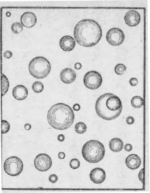
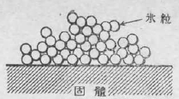
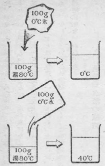
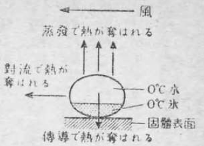
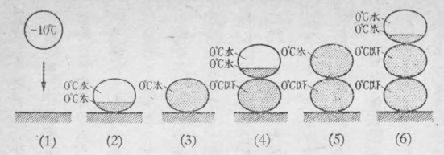
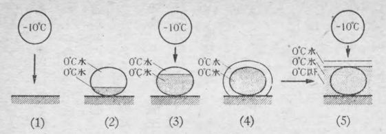
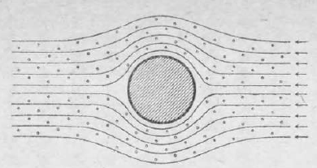
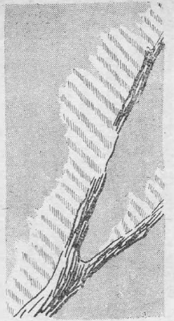

冬のスポーツとして、スキーが急激に人々の間にひろまったとき、
冬山の魅力は、一に雪の森厳さと美しさとにある。ひとたび冬山のこの美しさを味わった人々は、決してそこから開放されることがない。こういう人々に、わけてもその美しさをたたえられたのは、蔵王山である。
蔵王山は、山形県と宮城県との境にある高さ一八四一メートルの山である。高さからいっても、山の形からいっても、何の奇もないごく普通の山といえよう。その麓には、上ノ山、赤湯、青根などという温泉がある。また山頂には、この山の山形側の山麓に生れた歌人斎藤茂吉氏の歌碑が建てられている。そしてそれには次のような歌がほりこまれている。
陸奥をふたわけざまに聳えたまふ蔵王の山の雲の中に立つ
この歌のうたうとおり、蔵王山は、スキー家たちは、よく蔵王へ行って来たか否かを話題にする。なぜ蔵王へのぼることが、スキー家たちによってそんなに問題になるのであろうか。一つはこの山の冬の気象が非常に厳しいので、高さに於てはさほどのこともないが、相当の練達が必要とされていることである。しかしこの山には、いま一つもっと人々の心を惹くことがある。それはこの山に特有な樹氷の景観である。蔵王山の樹氷は、今日では「モンスター」という名前で一般に通っているように、まったく特異な貌をもって、雪の深山に並び立っているのである。
この雪山の「
この樹氷は、簡単にいってしまえば、針葉樹が全体に雪で蔽われて、「怪人」の姿になったものである。
吹雪を犯しての苦しい登りがつづいて、やがて八合目あたりにつくと、急にこの怪人たちが、何千何万と立っている神秘境に入る。そのモンスターの間をぬって、スキー家たちは縦横に滑走するのであるから、その愉快さは、他の山では味わえぬものである。
樹氷はもちろん蔵王山だけで見られるものではない。北海道などで少し山奥へ行くと、どこでも見られる現象である。しかし蔵王の樹氷こそは、樹氷として人々が知っているものの中で、最も美しく、又荘厳なものであって、樹氷の代表として恥しくないものである。
蔵王山の樹氷は、雪がたくさん針葉樹に凍りついたものである。蔵王山と限らず、冬山へ行くと、
ところが、もともと雪片や雪の結晶や氷の類などは、そう簡単に固体の表面には、くっつかないものである。たとえ風でかなりの勢いでぶつかっても、大抵は弾ね返ってしまう。氷のかけらを何かの表面にぶつけてみればすぐ分るとおりである。それで雪や氷が固体の表面に凍りつくには、何か特別な理由がなくてはならない。この現象はもっと広い意味で、寒い国では非常に重要な問題である。そして一般に着氷という言葉でとり扱われているのである。
着氷の現象が、実際問題として、一番問題になるのは、雪中飛行の場合である。雪の中を飛行機がとぶ時に、或る気象状態の場合には、翼の前べりだの、プロペラだのに、この着氷が生じて、飛行機がとべなくなることがしばしば起る。このことは、アメリカなどでも、ずっと以前から問題になっているので、或る人などは、この着氷を「航空界の最大の敵」といっているくらいである。
ソヴィエト政府が一九三七年、すなわち今日の日本がその悲運の第一歩を踏み出した蘆溝橋事件の起きた年に、北極まで飛行機をとばせたことがある。北極の氷上で一年間滞在して極地の気象観測をするための学者たちを、北極まで運ぶのが目的であった。その時の操縦指揮者ヴォドビヤーノフの記録は、はじめからおわりまで、彼等がいかに苦心して、この着氷とたたかったかという記録である。
着氷の恐ろしさは、飛行機だけとは限らない。電線への着氷というのが、又非常に困る問題なのである。飛行機のことは、今日の日本では直接の問題でなくなったが、電線への着氷はますます切実な問題となって来たともいえる。というのは、飛行機に着氷が起きるような気象条件の時には、大抵は電線にも雪が凍りつく。そしてみるみるうちに、電線が真白な錦蛇のようになってしまう。それが吹雪の強い風に吹きゆられるので、どんな強い電線でも切れてしまうことがよくある。
一番困るのは、水力発電所から都会へひいてある高圧の送電線が、よくこの災にあうことである。水力発電所は、雪の深い山地にある場合が多い。それで送電線は着氷の起り易い冬山の間を通ることが多いので、しばしば着氷に悩まされるのである。水力電気は、今の日本では大切な動力源なので、それが一時的にでも、ちょいちょい断線をしては非常に困ることはいうまでもない。鉄道がもっと広く一般に電化されるようになれば、この送電線への着氷の問題はますます重要な問題となって来る。
そういう大切な問題であるところの着氷の現象の研究が、すなわち樹氷の科学なのである。雪や氷だけならば、着氷は起きないことは、前にいったとおりである。着氷の秘密は、実は雪に伴う霧にあるのである。それでまず霧粒のことについて、ちょっと必要な知識だけのべておこう。
霧は、霧粒とよばれる非常に小さい水滴が、たくさん空中に浮んでいるものである。霧の粒といっても、雲の粒といっても同じことである。もともと霧と雲とは同じものであって、空高くにある時は雲といい、それが地上まで下りて来た時に霧というだけにすぎない。それは非常に小さい水滴の集まりである。普通われわれが見る霧や雲は、水蒸気が液化して、小さい水滴になったものである。
それ等の雲や霧の粒は、直径百分の一ミリないし百分の五ミリ程度の小ささの水滴の場合が多い。水滴の大きさは雲や霧の種類によって異り、また同じ霧の中でも、大小いろいろな粒がまじっているが、いずれにしても、小さいものである。そのうちでも比較的多いのは、その中間程度のもので、すなわち百分の三ミリくらいの直径をもった水滴が多い。第１図が、霧粒を油の膜の中に吸いとってみた顕微鏡写真の写しである。こういう水滴のたくさん集まったものを、われわれは雲または霧とよんでいるのである。もっとも青空の極めて高いところに、刷毛ではいたように、薄くあらわれる巻雲などは、小さい氷の結晶の集まりであるが、それは今別問題としておく。

第１図
雲や霧が水滴の集まりならば、それが何故落ちて来ないで空中に浮いているかという点をちょっと説明しておこう。それはほんとうに浮いているのではなく、極めてゆっくりと落ちて来ているのであるが、その速度があまり小さいので、何時までも浮いているように見えるだけなのである。塵などが空中に浮んでいるのと同じことで、小さいものほど空気の抵抗のために、落下速度がおそいのである。直径百分の五ミリという大きい霧粒でも、一秒間に二十六センチの速度でしか落ちないし、それより小さい霧粒だと、もっとずっとおそく落ちるので、ちょっと見ると浮いているように見えるのである。
霧粒は水滴であるから、それが寒いところで固体の表面にくっつくと、凍りつくのは当然である。そして樹氷は、よく調べてみると、実は霧粒の凍りついたものであることが分る。顕微鏡で樹氷の構造を覗いてみると、小さい氷の粒が、ちょうど団子を重ねたように凍りついて出来たものが多い。粒と粒とは、各々一部分でくっついているので、隙間には空気がはいっている。粒自身は氷の粒であるから、透明なのであるが、そういう透明な粒がたくさん集まったものは、全体として雪のように白く見える。雪が白く見えるのも同じことであって、水晶でも硝子でも、大きい塊は透明であるが、それを粉に砕くと白く見える。それは粒と隙間の空気との境で、光が反射散乱されるからである。
ところで着氷の起るような寒いところ、例えば零下八度とか十度とかいうところで、どうして霧粒が依然として水滴でいるかという疑問が起るであろう。それは実際に、そういう寒いところでも、水滴はやはり水の滴として存在し得るので、氷の粒にはならない場合が多いのである。それは水が「過冷却」しているからである。
水は或る場合には、零度以下になっても凍らなくて、依然として、液体の水のままでいることがある。そういう状態の水を過冷却の水という。冬山に毎日のようにかかる濃霧は、ほとんどすべての場合に、過冷却の霧粒から成っているのである。
この過冷却水の問題は、非常に重大な問題であって、必ずしも霧粒の場合ばかりとは限らない現象なのである。
普通小学校の物象などでは、水は零度で凍ると教わっているが、これはいい現わし方が極めて曖昧なのであって、むしろ間違っているといった方がよいくらいである。というのは、ほんとうは水は零度になってもなかなか凍らないからである。
零度というのは、厳密にいうと、水と氷とがまじっていて、それがいつまでもそのままの状態でいる、その時の温度が零度なのである。水と氷とのまじったものが、零度より少しでも高い温度になると、氷がとけて水の分量が増し、反対に零度より少しでも低い温度になると、水が凍って氷の分量が増す。そのいずれでもない境の温度が零度なのである。それで「水が凍る」という現象は、「水が氷になる」こと、すなわち現象が進行する場合を指しているので、零度以下にならないと、水が氷になるという変化は進行しないのである。
水は一般に静かに冷してやると、決して零度では凍らない。零下一度又は二度ぐらいまで冷えてから、急に氷が出来はじめるのが普通である。試験管に蒸溜水を入れて、それを塩と雪とで冷し、その中に綺麗に洗った寒暖計を入れておくと、この様子がよく分る。寒暖計は大抵の場合、零下二度又は三度まで下って行く。そのうちに何かの機会で、氷が出来はじめる。そうするとその氷がだんだん成長して行って、こんどは水の温度が零度近くまで上って来る。零度近くというのは、極めて零度に近い、例えば零下十分の一度とか、零下二十分の一度とかいう温度である。その零度に極めて近い状態のまま、時間がたつと全体が氷になるのである。この過冷却の水を作る実験は、器をなるべく清浄にして、埃などを含まない綺麗な蒸溜水を使って、静かに冷してやれば、誰にでも簡単に出来る実験である。
水が氷になる場合、全体が一度に氷に変化することはない。どこか氷になる
過冷却の水は、実験室の中でよく注意を払ってやれば、相当低い温度まで得られる。零下一〇度附近まで水を過冷却させることは、そうむつかしいことではない。
過冷却の水などというと、何かごく特殊な物理現象であって、それは物理学者だけが知っておればよいことだという風に考えられ易い。われわれの日常知っている水の凍るという現象とは、全然ちがった研究室内の特別な問題で、日常生活には何も関係のないことのように考えられがちである。しかしそういう考えは大いにまちがっている。その一つの例として、アルトベルクの行なったシベリア河川の凍結の研究を、一挿話として、ここに入れておこう。
シベリアは極寒不毛の荒野として知られている。しかしソ連にとっては、この広い地域を不毛の地として放っておくわけにはゆかない。そこでシベリア開発のためにいろいろの計画をたてて、それを実行して来た。そのうちの一つに、シベリアの電化という問題があった。
シベリアには石炭は相当豊富にある。しかし輸送や地理的気候的条件があって、発電を石炭ばかりに頼っていることは出来ない。一方水力電気の水源はたくさんあるのであるが、それは冬になると凍ってしまうので、そのままでは利用出来ない。それを何とかして解決しようというのが、シベリア電化の問題なのである。
このむつかしい問題の解決を命ぜられたのが、アルトベルクという学者であった。彼はその命令をうけた時に、まずどうしたか。彼はすぐシベリアへ出かけて行きはしなかったのである。
シベリアの急流が凍るのも、実験室内の器に入れられた水が凍るのも、根本は水が凍るという一つの現象である。それで彼は、シベリアに於ける河川の凍結の問題を解決するためには、まず水の凍結の問題を解決しなければならないと考えたのである。水の凍結の問題などというと、一番平凡な手近な問題で、そういうことは、もうとっくに研究しつくされているだろうと思われるかもしれない。しかしこれは非常にむつかしい問題であって、今まで誰も徹底的には研究していなかったのである。
そういう難問題に真向から取り組んだ彼は、驚くべし、このために研究室に十年ばかり立てこもって、不屈の勉強をつづけた。そして遂に水の凍結の問題を解決したのである。水の凍結は常に過冷却の状態を経て、それから凍結が始まる。その初期においてはまず水の内部に非常に小さい粒、すなわち核が出来て、それから氷が発達してゆく。その核はちょっと見極められないほど早く出来、一旦それが出来ると、その後は過冷却の度によって、いろいろちがった速度で比較的ゆっくりと全体が凍結する。その間の結晶の生成発達、熱の伝達の状態、凍結進行速度の量的関係などを、詳しく調べたのである。これが十年にわたる研究室生活から得られた、アルトベルクのシベリア電化に対する解答の第一篇であった。
もちろん実験は微細な点にまで及んだのであるが、それにはここではふれない。とにかくこの基礎的研究を終えたのち、アルトベルクは、シベリアへ乗り出したのである。そして実際の河川についてなお数年間の研究をつづけ、天然の川水の過冷却状態から、その凍結様式を詳しく調べ、遂に見事にこの問題に対して解答を与えたのである。根本的な研究が、けっきょく勝利への早道であるという、一つの明瞭な例ということが出来よう。
以上の話でも分るように、水の過冷却の現象は、凍結の問題をとく鍵である。ところでわれわれの問題とするのは、器の中の水でもなく、河川の水でもない。それは空中に浮いている水滴、すなわち霧粒である。この場合は、過冷却の状態は、一層よく起り易いのである。霧粒の場合には、核の役目をするところの器壁がないので、気温が非常に低くなっても、なかなか凍結は起らない。
特に水滴が小さくなるほど、過冷却が起り易い。グリーンランドに於て、ウェーゲナー教授は、零下三〇度の時にも、なお霧粒は水滴のままで存在していたという観測をしている。更にアメリカのバード少将が南極探検に行った時には、最低零下四四度の極寒のところでも、なお凍らないで水のままの形で大気中に浮かんでいる霧粒があったという報告すらある。
私たちは、低温実験室の中で、小さい霧粒ほどの水滴を作って、それを細い兎の毛にくっつけて、空中に吊したままで冷してみた。その場合も、零下一五度
霧粒は気温と同じ温度になっていると考えられるので、気温が零度以下の場合には、いつでも過冷却の水滴になっている。そして過冷却の水は不安定な状態にある。それで固体の表面に衝突すると、すぐにそこで凍りつくのである。この場合、固体の表面が核の役目を果たす。もっとも天然の実際の場合には、固体の表面にはいつでも霜や氷が既についているので、過冷却水は、その氷と接触することによって、一層凍り易いのである。この過冷却した霧粒が固体表面へ凍りつく現象が、すなわち着氷或は樹氷の現象なのである。

第２図
ところで天然の樹氷をよく調べてみると、前にも言ったように、霧粒が団子を重ねたように凍りついているものが多い。これを、樹氷の中でも更に分類して、気象学の方では
ところで天然の場合には、こういう霧粒だけで出来た着氷の外に、雪の結晶がまじって凍りついたものがある。着氷を起すような条件にある霧が来ている時に、雪がまじって降っていると、霧粒が糊のような役目をして、雪を固体の表面へ凍りつかすことになる。
蔵王山のいわゆるモンスター、あの雪の大きい塊りは、金華山の沖で出来る濃い過冷却水滴の霧がやって来て、それが糊の役目をして、あの山に降る雪の結晶を針葉樹の上へ凍りつかして出来たものなのである。怪人の正体は、これで一応わかったわけである。「蔵王の山の雲の中に立つ」と歌った茂吉は、この山が持っている特殊な性格を見事に歌ったものといえよう。
樹氷の現象は、いままでの説明では、過冷却した霧粒が固体の表面に凍りつくというだけの簡単な現象になってしまう。世界の航空界最大の敵と恐れられている着氷とても同じことである。このことは、原理的にはそのとおりである。そこで問題は、そういう一つの簡単な原理から、どうしていろいろな複雑な着氷の現象が起きるかという点に帰する。
前に樹氷には、霧氷と粗氷との二種類があるといったが、その差が何に原因しているかが、一番大切な問題である。ところがその差は比較的簡単で、過冷却の霧粒が固体の表面へ凍りつく時、二種類の凍り方があることがすぐ想像される。霧粒が一つ粒の形のままで凍りついて、その上に又次の霧粒がくっついて凍る、という風に上へ上へと凍りついて行けば、霧氷になることは明らかである。ところが前の霧粒がまだ凍り切らないうちに、次の霧粒がやって来ることもあり得る。そういうことが沢山の霧粒について起ると、固体の表面は一度水の膜で濡らされることになる。そういう水膜が凍れば、普通の氷に近い粗氷になるのであろう。
そうすると、けっきょく問題は一つの霧粒、すなわち過冷却した水滴が凍るのに、どれくらい時間がかかるかという点と、霧粒がつぎつぎと固体面へ衝突するその時間間隔がどれくらいかという点と、この二つにかかるわけである。前の方を凍結時間といい、後の方を衝突間隔と呼ぶことにする。それで前の説明は次のようにいうことが出来る。衝突間隔が凍結時間より長ければ霧氷になり、逆に短かければ粗氷になる。こういう風に、現象をよく考えて、定義のはっきりした言葉を作って、その言葉を使って現象を明白にきめて行くのが、科学的なやり方の一つである。
まず凍結時間の方を考えてみよう。
もともと過冷却の水というものは、かなり不安定なものである。何かちょっとした刺戟があれば、忽ちその安定は破れる。氷の表面につけばもちろんのこと、それでなくても他の固体の表面についてそこで核が得られれば、すぐ凍りついてしまうはずである。特に直径百分の三ミリというような小さい水滴であれば、一般には既に氷のくっついている固体の表面に衝突するのだから、瞬間的に凍りついてしまいそうである。しかし実際は、ここに「水が凍る時には潜熱を出す」という現象があるために、短いことは短いが、全水滴の凍結には或る時間を要するのである。それで凍結時間の問題には、この潜熱の問題がはいって来ることになる。
水が凍る時には、一グラムについて八〇カロリーの潜熱を出すということは、たしか新制中学でも教わるかと思うが、一応そのちゃんとした説明をしておくことにしよう。
水が凍って氷になる時、一グラムについて八〇カロリーの潜熱を出すというのは、別の説明をすれば、零度の水はそのままではいつまでも氷になれない、一グラムについて八〇カロリーの熱を零度の水から取り去ると、零度の氷になるということである。出す熱量だけ取り去ってやらないと変化は進行しないのである。
大抵の場合、物質に熱を与えれば温度が上り、熱を取り去れば温度が下る。水や氷も同じようにその性質をもっている。しかし水の零度の場合だけは、特別な変化があって、熱は温度を上げるという表向きの作用をせず、固体が液体になるという蔭の作用をする。すなわち潜熱（かげにひそんだ熱）となる。
この潜熱のことは、水を次第に冷やしてゆく場合を考える方が分りよい。たとえば銅板で作った筒の中に一〇〇グラムの水を入れて、寒暖計で測ってみたら、一五度であったとする。この銅の筒を雪と塩との混合物の中にさしこんで冷やすと、水は冷えて寒暖計の目盛りはどんどん下ってゆく。一グラムの水を温度一度だけ変化させる熱量は一カロリーであるから、この場合もし一分間に五度の割合で水温が下るとすれば、その一分間にこの水から五〇〇カロリーの熱が取り去られて、塩と雪との混合物の方へうつったわけである。
こういう風にして水が零度になるまでは、だいたい一様の速度で冷えてゆくが、零度になると、寒暖計の目盛りはぴたりと止って、それ以下には降らない。その時筒の中を見ると、水の中に氷が出来はじめている。そして全部の水が氷になる迄は、寒暖計は零度を示していて、やがて全部が氷になると、又温度が下りはじめる。水が全部氷になり切るまでには、かなり時間がかかるが、この間もどんどん熱は雪と塩との方へとられていると考える方が至当である。温度にはあらわれない潜熱が水からとられて、水が氷になるのである。
この時の潜熱の量は、精密な測定の結果、一グラムについて八〇カロリーであることが知られている。だいたいの値は、第３図のような実験をしてみれば分る。これは説明するまでもないであろう。もしこの実験をしようと思えば、熱が外へにげると不正確になるから、ビーカーを綿でくるんでよく断熱し、そして手早く実験をしなければならない。

第３図
同じことをくり返して、いろいろないい現わし方で言っておいた方が、後の理解に便利であろう。零度の水一グラムは、零度の氷一グラムよりも、八〇カロリーだけ余計の熱を内部にかくしてもっている。その隠してもっている熱をとってしまえば、水が氷になる。更に言いかえると、零度の水一グラムが零度の氷一グラムになると、水一グラムを温度八〇度上げるだけの熱が出て来る。
こういうことは、物理をちょっとでも教わった人には、分り切ったことであるが、一般の読者のために、少しくどいくらい説明しておく。この潜熱のことがよく分らないと、この後の説明がよく理解出来ないからである。
重さ一グラムの水滴が、零下一〇度まで過冷却していた場合、それが凍る時にどういう経過をとるであろうか。
この過冷却水滴が氷のついた固体表面に衝突すると、その瞬間に氷にふれた部分から凍結が始まる。するとその凍結のために潜熱が出て水滴の温度を高める。水滴ははじめは零下一〇度まで冷えていたが、この潜熱のために温められて、零度に近づく。そして零度になると、凍結の進行は止り、従って潜熱はそれ以上出なくなる。そして水滴は一部零度の氷となり、一部零度の水となって、そこで落付いてしまう。もちろんこの水滴に外から熱が出入りしないと仮定しての話である。

第４図
この時全水滴の何分の一が凍って、それで落付いてしまうかというに、それは八分の一だけ凍ってそれで止ってしまうことはすぐ分るであろう。一グラムの水の八分の一だけが凍ると、※［＃8分の1、U+215B、62-10］×80＝10カロリーの熱が出て来る。ところがこの一〇カロリーというのは、零下一〇度まで冷えていた一グラムの水滴を零度にするのにちょうどいいだけの熱量である。それで零下一〇度まで過冷却した水滴が、固体表面に衝突して凍りはじめると、その体積の八分の一だけが零度の氷になり、残りの八分の七が零度の水となって、それで凍結は止ってしまうはずである。
この場合水滴の大きさは実は問題でないので、一グラムというような大きい水滴でなく、どんな小さい霧粒でも凍る割合は同じことである。たとえば〇・一グラムの水滴が零下一〇度まで過冷却していて、それが凍りはじまる場合を考えても、全く同様に水滴の体積の八分の一しか凍らないことは、すぐ分るであろう。
今気温零下一〇度の時に、霧があったとする。そうすると、その霧粒は大小に拘らず、どれでもみな固体の表面に衝突した時に、その八分の一だけがまず凍って、それで凍結は一時止ってしまうはずである。過冷却していた水滴が全部瞬間的に凍るためには、それは零下八〇度まで過冷却している必要がある。それもすぐ分ることであろう。しかし零下八〇度まで過冷却されるというようなことは、実際にはないことである。
こういう風に考えると、いつでも霧粒は衝突した瞬間には、必ずその一部分は水の状態のままになっているということが理解されるであろう。しかしこの水の状態は長くはつづかない。外界の気温も固体も冷えているので、そこからまた熱が外界へとられて行く。それで間もなく全部が凍ってしまうのである。
こういう風に文字にかいてみると、霧粒が固体表面に衝突してから、凍り切るまでに、ゆっくり時間をかけて現象が進行するように思われるかもしれない。しかしもちろんこれは普通の言葉では瞬間にといえるくらい短い時間である。普通一秒間の十分の一とか、百分の一とかいう程度の短時間である。しかしそういう短時間でも瞬間などという曖昧な言葉で片づけることは出来ないので、この時間すなわち凍結時間をくわしく研究しなければならないのである。そして飛行機の着氷というような重大な現象が、この凍結時間の如何によって著しく支配されるのである。
過冷却した霧粒の凍結時間は、何によってきまるであろうか。第４図で零度の水として残っている部分から、外界へ熱を奪われるために、この水が凍るのである。その凍るに要する時間は、したがって、外界へ熱をとられる速度できまる。それでどういう形式でこの水滴から熱がとられるかということを考えてみるのが、まず第一にすべきことである。
初めにこういう理論を考えたのは、独逸のブリーカーという学者である。ブリーカーは、風のために対流で熱がとられることと、水分の一部が蒸発するために熱が奪われることと、その二つを考えてみた。その後アメリカでもこの方面の研究が、飛行機への着氷の問題としてとりあげられ、ブリーカーの理論はさらに発達した。日本では、中央気象台の太田正次氏が、ブリーカーの理論に、さらに伝導によって逃げる熱を計算に入れて、くわしい研究を発表した。
まずブリーカーの理論から簡単に説明してみよう。
水の蒸発で逃げる熱と、空気の対流で逃げる熱との間には或る関係があることは、前から熱学方面で十分研究されていたことである。その両方とも風速によって著しく影響されること、すなわち風速が大きくなると早く冷されることは、常識で考えても当然なことである。しかし常識では数量的な値は出ないので、物理学でこれを正確に計算してみたのである。
対流というのは、熱を受けとった物質の一部が動いて、それで熱を伝えることである。それで対流は、物質の一部が自由に動き得る場合でなくては起らない。すなわち気体や液体だけに対流が生ずるのである。たいていの気体や液体は、動かない場合は熱を伝えにくいものであるが、対流がある場合には、よく熱を伝えるものである。空気の対流はわれわれが毎日経験していることで、大気中の空気の対流がすなわち風である。風に吹かれると寒いのは、対流によって熱が空気中にとられるからである。
それから対流がある場合には、水は蒸発をする。ところが水が蒸発する時には、たくさんの潜熱を必要とする。この潜熱は水が氷になる場合よりもずっと大きいので、一グラムの零度の水が蒸発して、一グラムの零度の水蒸気になるには、約六〇〇カロリーの潜熱が必要である。それでごく僅かな水が蒸発しても、たくさんの熱を奪うことになる。
この対流と蒸発とによる熱のとられ方を計算して、ブリーカーは理論的に、全水滴が凍るのに要する時間を出した。この凍結時間は、第一に霧粒の大きさによってちがう。大きい霧粒ならば比較的長い時間がかかり、小さい霧粒ならばすぐ凍ってしまうのは当然である。又風の強い時は早く冷されるので、風速によっても異る。それから気温が低ければすぐ凍るが、あまり低くなければ、かなり時間がかかるはずである。
そういういろいろな要素を入れて、ブリーカーはそれぞれの場合の凍結時間を理論的に出した。太田氏はこの理論に更に伝導によって逃げる熱を考えに入れて、いろいろな場合について計算をした。その二三の例をあげてみよう。

第５図
気温零下一度、風速毎秒一〇メートルの場合について計算してみるに、直径百分の一ミリの小さい霧粒では、凍結時間は〇・九秒となる。直径百分の一ミリというのは、着氷を起すような天然の霧では、小さい方である。同じ気象条件で、直径百分の三ミリという普通に最も多い霧粒は、全部凍り切るのに、七・四秒かかるという結果になる。これはかなり長い時間である。しかし気温が零下一度というのは、ほとんど零度に近い、すなわち低温の世界では非常に暖かい時のことである。それで凍結時間がこんなに長くなったのである。
気温がもっと低くなれば、もっとずっと速く凍ってしまうことはいうまでもない。風速は同じく毎秒一〇メートルとして、気温が零下一〇度まで低くなると、直径百分の一ミリの小さい霧粒は、百分の一秒で凍ってしまい、百分の三ミリのものでも、百分の三秒で凍るという計算になる。
こういう結果からみると、気温が零下一〇度附近まで下っている時は、大抵の霧粒は、百分の一秒程度の短い時間で凍ってしまうものと考えられる。
実際に山上で、樹氷が出来る場合を頭に浮べてみよう。おそらく風速は毎秒一〇メートル以上あり、気温も少くも零下一〇度くらいにはなっているであろう。更にもっと重大な飛行機の着氷の場合にはどうであろう。この場合は、飛行機が猛烈な速さで動いているので、機体に対しては、非常な風速がある。時速六〇〇キロの飛行機では、風速は毎秒一六〇メートル余りとなる。それで、凍結時間は、もっとずっと短くなることになる。
過冷却した霧粒が固体の表面に衝突して、一部は瞬間的に凍り、残りは水の状態でいる。それが凍結時間だけ経過して完全に凍る。その上に又霧粒が凍りついて同じようなことがくり返される。その経過をモデル的に描くと、第６図のようになる。（１）零下一〇度まで過冷却した霧粒が固体表面に衝突する （２）衝突したらほとんど瞬間的に体積の八分の一が凍る （３）凍結時間だけ経つと全霧粒が凍る （４）その上に第二の霧粒が衝突して又一部だけ凍る （５）更に凍結時間を経過するとこの霧粒も凍る （６）第三の霧粒が更に衝突して凍りつく。

第６図
こういう風にして出来た樹氷は、小さい氷の粒が上へ上へと団子を重ねたように凍りついたものである。これが霧氷であって、全体として白く見えることは、前に説明したとおりである。
以上の話は、いわば理論的に頭の中で考えたことである。天然の霧氷が、果してこのような経過をとって出来るものか否かは、近年まで断定は出来なかった。天然に霧氷が出来るところを、顕微鏡で実際に観測して確めるというような研究は、世界中どこでも為されていなかったからである。
戦争中に、北海道のニセコアンヌプリという高い山の頂上に、着氷の研究所が出来て、私たちはそこで実際の天然の着氷について、いろいろな研究をした。そして原理的には、ブリーカー等の見解がだいたい正しいということを確めることが出来た。
ニセコアンヌプリでの観測の模様をちょっと説明しておこう。
髪の毛くらいの細い針金を、風の吹くところに露出して、それに着氷を起させる。そして顕微鏡で覗きながら、その着氷が生長してゆく様子をずっと観測しているのである。そうすると、霧粒がこの細い針金に衝突する。衝突した瞬間は、まだ霧粒の表面は水の状態でいる。そのことは、見ているとその表面が細かくぶるぶると振動することによってよく分る。更にその上に霧粒が衝突すると、水滴がだんだん大きくなることもあるが、前の霧粒がすっかり凍り切ってから、次の霧粒がとんで来ると、氷の粒が団子を重ねたような形になって凍りつく。すなわち霧氷が出来るのである。顕微鏡の下に、この氷の微細な花見団子が出来てゆく姿を見ていると、つい寒さを忘れてしまうくらい面白かった。
もっとも冬のこの山の頂上は、冬の富士山の頂上くらいの悪気象条件である。それで研究者がひどく苦労をするので、長時間の精密な観測は出来ない。疲れた人間の眼の観測では、どうしても見落しが多い。それで映画を利用してこの研究を行なった。映画を用いて顕微鏡撮影をするのである。すると霧粒が衝突して、初めは水の状態であり、それがだんだん凍ってゆく経過を明瞭に撮ることができる。それを拡大映写してみると、この微細な出来事を、ありありと一層よく観察することができるのである。
凍結時間のことは、以上でだいたい分ったとして、つぎに前にもいったように、霧粒の衝突間隔の問題がある。すなわち一つの霧粒が固体の表面に衝突してから、次の霧粒がとんで来るまでの時間が、今一つの大切な要素なのである。その時間が凍結時間より長いか短いかによって、樹氷の構造がすっかりかわってしまう。
凍結時間は、前にものべたとおり、霧粒の大きさ、気温、風速などによって異るが、衝突間隔の方は、それとはちがう。この場合は、大気中にある霧粒の数が多いか少いかが問題になるのである。霧粒がたくさんあればつぎつぎと速く衝突して来るし、少なければその時間間隔が長くなる。それで霧の濃度が一番の問題となって来る。
もちろんこの場合に、風速も影響がある。風速が大きければ衝突間隔が短くなることは常識でも考えられるであろう。物理学者の考えも同じことで、衝突間隔を、霧の濃度と風速とによってきめる計算をしたのである。
ところで霧の濃度であるが、これを実際に測ることは厄介である。霧のある大気の一定体積をとって、その中にある霧粒の数をかぞえることは、現在では可能であるが、それにはちょっとむつかしい実験技術が必要である。それでだいたいの目安を得るのに、一番よい方法は、霧の中の見透しを利用する方法である。
登山家ならば誰でも知っていることであるが、霧が濃くなると、その中では見透しがきかなくなる。学問的の言葉を使えば、視程が短くなる。高い山に登って今まで晴れていたのに、脚下から霧が湧き出し、音をたて、草をなびかせ、岩をぬらして、たちまちあたりを乳白色の世界にしてしまうことがよくある。そんなときに霧くらいと思って馬鹿にして、道を失い遭難することがある。こういう濃い霧、すなわち視程の短い霧は、霧粒の数が多いのである。それで視程を霧粒の数の目安に使うことにする。もちろん視程が短ければ、衝突間隔も短くなる。
もっとも霧の中の視程というものは、やかましくいうと、霧粒の数だけでは決まらないのである。まだまだ残された重大な問題があり、もっと研究を必要とするのであるが、現在のところでは、これでだいたいの見当をつけるというくらいで満足しておくよりしかたがない。こういう考えで、いろいろの学者たちが、衝突間隔の計算をしたのであるが、その中で、さっきいった太田氏の計算例を紹介しよう。
視程五〇メートルの霧といえば、かなり濃い霧である。そこに毎秒一〇メートルの速さの風が吹いている。そういう場合の衝突間隔を計算してみると、〇・二七秒という値が得られる。まずだいたい凍結時間と似た程度の大きさの値となる。霧がもっと濃くなるか、風速がもっと大きくなると、この値は百分の一秒程度まで短くなる。この衝突間隔と凍結時間とをくらべて、どっちが長いかによって、樹氷の性質が著しく異ることは、前にも述べたとおりである。
前の衝突時間の計算例を、今一度使ってみよう。
視程五〇メートルの霧、風速毎秒一〇メートル。
気温は零下五度、霧粒は直径百分の三ミリの普通の霧。
この場合の樹氷は、どういう形になるであろうか。
衝突間隔を計算してみると、前にいったように、〇・二七秒という値が出て来る。
この場合の凍結時間を、前の方法で計算してみる。その値は、〇・三一秒となる。すなわちこういう気象条件では、理論どおりにゆけば、霧粒が固体の表面に衝突してから、全水滴が凍りつくまでには、〇・三一秒かかるはずである。
ところがそれよりも短い時間、すなわち〇・二七秒で、次の霧粒がやって来て衝突する。そうすると、まだ全部凍り切らないで水の部分が残っているところに、次の霧粒がやって来ることになる。この時には、もちろん前の場合のような「花見団子」にはならない。後の水滴は、前の水滴のまだ凍り切らない水の部分とくっついて、既に凍った氷の部分の上に拡がってしまうわけである。そうしてそれが凍り切らないうちに、再び次の水滴がとんで来る。そういう風にして、現象が進行してゆくことになる。
こういう場合には、固体の表面は、いつでも水の膜で蔽われて、その膜が順次に凍ってゆくということになる。このようにして出来る氷は、だいたい透明に近い氷、すなわち粗氷になるはずである。前に「凍結時間が衝突間隔よりも長いと粗氷になる」といったのは、この場合のことである。
この粗氷の出来る経過を、モデル的に描いたものが、第７図である。第６図の例と合わすために、零下一〇度まで過冷却した場合についてみよう。（１）零下一〇度まで過冷却した霧粒が固体表面に衝突する （２）衝突した瞬間に八分の一だけ凍る （３）残りの水が凍り切らぬうちに次の霧粒が衝突する （４）零度の水膜がひろがる （５）表面がいつも零度の水膜で蔽われながら凍結が進行する。

第７図
この状態はやはりニセコアンヌプリの観測所で、顕微鏡下に観察され、映画によって更によく撮られた。或る場合には、水滴はなかなか凍らない。したがって水滴はそのままでだんだん大きくなってゆく。そして或る程度まで大きくなった時に、急に内部から凍りはじめるというようなことが起る場合もある。
このようにして、今までに述べたことは、原理的にはだいたい正しいということが分った。しかし天然に見られる樹氷は、非常に複雑な経過をとって出来たものである。霧氷になる条件と、粗氷になる条件とが、入りまじって来る方が、むしろ普通である。その上に今まで全然考えていなかった昇華という現象がこれに加わることもある。昇華というのは、氷が水の状態を通らずに直接に水蒸気になったり、或は水蒸気が直接に氷になったりする現象のことである。この昇華で出来る氷は結晶質の氷であって、今までのべた氷とは、全然別のものである。それから蔵王山の「怪人」たちには、この外に雪の結晶がまじって凍りついているという別の現象が加わっている。簡単に樹氷は木に雪がくっついたものという程度に説明したのでは、全く意味がないことが、よく分るであろう。
樹氷の科学は、すなわち着氷の科学である。樹氷といっても、着氷といっても、同じことであって、天然の樹木などに凍りついた時を樹氷といい、飛行機の翼や窓硝子などに凍りついた時を着氷という習慣になっているだけのことである。
蔵王山の樹氷がどうして出来たか、そんなことを研究しても何にもならないじゃないかといってはいけないのである。世界の「航空界最大の敵」を克服する科学が、すなわち樹氷の科学なのである。
樹氷そのものが、今までに述べたような非常に複雑な現象である。ところが飛行機への着氷となると、話はもっと厄介になる。飛行機はいろいろ複雑な気象条件のところをぬってとぶし、それに速度が著しく大きいので、現象はさらにむつかしくなるのである。
しかし飛行機への着氷の場合も、だいたいの筋を見るには、以上の考え方で一応はよいようである。以上の結果をまとめて今一度整理してみよう。
着氷の起きる条件は、まず第一に気温によって著しく左右される。また凍結時間その他が、すべて風速によって支配されるために、飛行機の場合だと、速度が大切な要素となってくる。霧粒がたくさんあるか否か、すなわち霧の濃度も問題である。
このようにいろいろな条件がそれぞれ効くのであるが、各々単独にきくとは限らない。そのうちで、飛行機の着氷の場合は、従来は気温が一番問題だとされていた。飛行中に着氷が起ったいろいろな実例をみても、零下一度ないし二度から八度くらいの間で最も起き易いことが知られている。それよりもっと寒くなると、却って着氷は起きにくいとされていた。もっともアメリカの定期航空の実例では、零下二十数度という寒さの時に着氷が起きたという記録もあるので、比較的の話である。あまり寒くなると、過冷却した水滴の量も少いし、その外まだ確めることの出来ない原因のために着氷はあまり起らない。最も恐ろしい気象の条件は、零度に近いところから、零下八度くらいまでの間であって、そういう時に霧が濃いと一番危険であるという風に思われて来た。
しかし最近、といっても戦時中の話であるが、着氷の研究が進んで、風速すなわち飛行機の速度の影響がだんだん分って来た。それは著しい影響があるのである。そうすると、飛行家にとっては、すこぶる厄介な問題となって来る。飛行機がとび立つ前、地表にあるものには天然の風しか吹かない。したがってそこでは着氷は起きない条件である。こう思って飛び出して行くと、飛行機だけには着氷が起る。そういう最も意地の悪い場合もあり得るわけで、そうなると、よほど用心をしなければならない。
風の問題は大問題であるが、それが最近まであまり研究されなかったのは、実験が困難だったからである。この研究には、着氷条件にある大気をそのまま吸い込む風洞、いわゆる着氷風洞が必要である。冬中毎日のように着氷条件にあるような高山の頂にこういう風洞を設置して、その中で実験をするのが一番よい方法である。
同じような目的で、低温室の中に風洞を造って、その中へ霧吹きで霧粒を吹き出して着氷を起させてみる方法もある。そういう方法は外国では十年以上も前から試みられている。しかしそれではまだほんとうのことは分らないのであって、天然の着氷条件にある大気をそのまま使う方が、ずっとすぐれていることはもちろんである。
ここまで来ると、着氷の研究、すなわち樹氷の研究が、いかにむつかしいもので、且つ大規模な施設を要するものであるかが分るであろう。スキー家たちにとっては、何も珍しくない樹氷のようなものでも、その秘密をほんとうに解くことは、如何にむつかしいものであるかが分るであろう。
以上の研究によって、われわれは着氷に対してずいぶんいろいろな知識を得た。しかしまだ問題は残されているのである。というのは、今までの研究は、主として熱学に関係した方面からの着氷の研究である。しかし着氷の実体をつかまえるには、以上のほかに空気の流れの方面にも着目する必要がある。すなわち流体力学的の研究もまた重要な一つの題目となるのである。
問題を一つずつ分けて話してゆくために、今までは固体の表面に霧粒が衝突して凍りつくと、簡単にいってきた。しかし霧粒が風に乗って流れている時に、それが果して簡単に固体の表面に衝突するかということを考えてみなければならない。考えてみるまでもなく、もし霧粒がほんとうに空気に乗って流れるものならば、それは固体面には衝突しないはずである。
いま、一本の円い柱があったとする。第８図の真中にある円が、その柱の切口を示す。風が右側から吹いているとすると、空気は図中の細線で示したように、柱のところで上下に分れて、柱を廻って流れる。霧粒がもし完全に空気の流れに乗っているとしたら、霧粒も図に見られるように、柱を廻って流れるはずである。そうすれば、固体の表面、この場合ならば円柱の表面には、霧粒は全然衝突しないことになる。

第８図
しかし実際には霧粒は柱に衝突してくっつく。それは霧粒が完全に空気の流れに乗って運動しないからである。そのはっきりした例は、砂がとぶ場合である。風の吹いている日に道を歩くと、風はもちろん顔にあたる。そして空気は顔を廻って後方へ流れて行く。ところでその風によって砂埃が立っているが、その砂粒は少くも短い時間中は空中に浮いているのだから、ちょうど霧粒と同じようなわけである。その砂埃はわれわれの顔に向って来て、顔に衝突し、その一部が目の中にとびこんだりする。このようなことは、われわれが日常経験しているところである。この場合には砂粒は風の流れに完全に乗り切っていない。風は顔を廻って流れてゆくが、砂粒は真直ぐに目に向ってとんで来るのである。粒が非常に小さければ、ほとんど完全に空気の流れに乗るが、そうとう大きければ、粒の運動の惰性によって、空気の流路からはずれて真直ぐにとぶことは、容易に考えられる。
霧粒が風に乗って流されて来て、固体の表面に突きあたる時に、霧粒が砂粒のように重いものならば、固体の全面にある全部の霧が凍りつくであろう。非常に軽ければ、大部分は固体をそれて流れるので、着氷はほとんど起きないであろう。
飛行機の場合ならば、その翼は空気の抵抗をさけるような形になっているので、空気は翼の上下に綺麗に分れて後方へ流れてゆく。それで霧粒が非常に軽くて、空気の流れに完全に乗っているとすれば、どんなにたくさん霧粒があっても、それ等は全部飛行機の翼の上下へ、気流の分布と同じ形をとって流れてしまう。それで飛行機への着氷という現象は起きないであろう。しかし霧粒はかなりの目方があるので、一部はそれて流れてしまうが、一部は翼に衝突して、凍りつくのである。しからば物体の前面にある全霧粒のうちの何割くらいが凍りつくことになるか。それは霧粒の目方と凍りつくべき物体の大小とによってきまるので、その量をしらべてみよう。
飛行機の翼とすると、問題がたいへんむつかしくなる。それで話を簡単にするために、円い柱について考えてみることにしよう。そして柱の正面から、霧粒をふくんだ空気が真直ぐに流れて来る場合を考えてみる。
第９図の（ａ）は、霧粒が重い場合である。すなわち前の例でいえば、砂粒が目にとび込む場合に相当する。図の中の太い実線は空気の流れを示し、細い線は霧粒の運動を示すものである。空気は柱から遠いところでは、一様に並行に流れているが、柱の近くまで来ると、柱を廻って上下に分れるので、この図のように流路が曲ってしまう。しかし霧粒は重いので、自分の運動の惰性が大きく、柱に近づいても、前の運動をそのまま延長したような形、すなわち真直ぐにとんで行って、柱に衝突する。それでこの場合は、柱の前面にある全部の霧粒が柱に衝突することになる。

第９図
同じ図の（ｂ）は、霧粒が非常に軽い場合である。この時は霧粒が完全に空気の流れに乗っているので、気流が柱の周りを廻って流れると同時に、それと同じ路を通って、霧粒も全部それてしまう。この場合は着氷が全然起きないことになる。
（ａ）の場合は、柱の前面にある霧粒の全部が衝突し、（ｂ）の場合は全然衝突しない。この両者はともに両極端の場合で、実際には前にもいったように、この中間の現象が起きるのである。同じ図の（ｃ）がその状態を示している。この場合は柱の前面にある霧粒のうちの何割かが、空気の流れを突っ切って柱に衝突することになる。
この衝突する割合を、数量的にあらかじめ計算しておくことができれば、非常に都合がよい。この割合を示す数を捕捉率と呼んでいる。この捕捉率は、第９図の（ａ）の場合は全部がつかまえられる、すなわち一である。（ｂ）の場合は全然捉えられないから零である。そして天然に実際に着氷が起きる場合は、一と零との中間の値、例えば〇・二とか〇・六とかいう値となる。その数値は霧粒の大きさ、風速、物体の大きさによってきまる。
捕捉率の理論的研究も、各国の学者たちによって前からなされていた。日本では中央気象台の今井一郎氏によって、その計算がなされている。やり方は流体力学的な計算をするのであるが、その結果次のようなことが知られた。すなわち捕捉率は、風速が増すとだんだん大きくなり、霧粒の大きさがちがえばもちろんかわる。更に大切なことは、柱が太くなると捕捉率が小さくなるのである。
今井氏の計算の一例をあげよう。霧粒の直径が百分の一ミリで、風速が毎秒三〇メートルの時に、飛行機の翼くらいの大きさのものに対して計算してみると、捕捉率は大体〇・一という値が出る。すなわち翼の前面にある霧粒のうちの約一割くらいのものが、翼に衝突して着氷となるのである。
ところが同じ気象条件、霧粒直径百分の一ミリ風速毎秒三〇メートルの時、もっと小さい物体では、捕捉率がずっと大きくなる。例えば電線くらいの細いものになると、捕捉率は約〇・九となる。すなわち電線の太さだけの前面にある霧粒の約九割が、その電線に凍りつくのである。
もっともこの〇・一とか〇・九とかいうのは、「率」の問題である。飛行機の翼のような大きいものの前面には、うんと沢山霧粒があって、その一割が凍りつく。電線くらいの細いものならば、その前面にある霧粒は少いが、その九割が凍りつくのである。ほんとうに凍りつく霧粒の量は、飛行機の翼の方が電線などよりもうんと多いことはもちろんである。
捕捉率が分ると、或る気象条件の場合に、着氷がどれくらいの速度でのびるかという見当がつく。飛行機の場合、少しくらいの着氷ならば恐ろしくないので、或る量以上つくと危険になる。それで着氷を起すような雲の層があまり厚くない場合、例えばそれを飛行機が一分間で通り抜けられるような速度だとする。その一分間に危険量まで着氷が起きるだろうか、大丈夫だろうかという見当をつけるには、捕捉率のごく大ざっぱでもよいから、その値を知っておく必要がある。
電線への着氷についても、太い送電線やケーブルに凍りつく量と、電話線のような細い針金につく量とは、同じ割合ではない。たとえば太い方にくらべて十分の一の細さの針金には、十分の一の量ではなく、もっとたくさん凍りつくのである。そういうことも電線への着氷防止または除去の方法を考える時の一つの基礎資料とすべきものである。
捕捉率の理論を実験的にたしかめるために、方々で実験がなされた。わが国でも富士山とか、蔵王山とか、ニセコアンヌプリとかでなされた研究がある。しかしこの実験は非常にむつかしい。というよりも理論の方がひどく実際とかけはなれているのである。計算の基礎は円柱のまわりを流れる気流の形にある。それで着氷が起る瞬間までは、この理論はあてはまるが、少し着氷がのびて来ると、固体の切口は円柱に着氷の加わった形になる。それはどうこじつけても円形とはいわれない。それでこの理論は着氷がほんの少し表面についたくらいのところまでしか適用されない。そういう程度の着氷については、実験の結果もだいたいこの理論が正しいという結果になっている。しかし着氷が大分生長した時、たとえば第10図のような状態になった時はどうか。実はその方がかんじんなのであるが、その時のことは実験は出来ているが、理論はまだほとんど進歩していない。

第10図
捕捉率に関する今までの考えは、空気の流れが一様だという仮定の下に立っている。しかし天然に着氷が出来る場合には、空気の流れは決して一様ではない。ほとんどの場合、固体の邪魔物があると、そこで空気中に小さい渦がたくさん出来る。そして着氷の形は、その渦によって著しく影響される。
天然で木の枝などに出来た着氷の形については、以前からもたくさんの記載がある。その大部分のものには、第10図に示したように、細かい縞のような凹凸の溝がある。スキー家たちが、冬山でみる樹氷の形は、蔵王山のモンスターのような特別の場合を除いては、ほとんどこの第10図のような形のものである。こういう縞のような構造は、前にもいったように、気流中に小さい渦がたくさん並んで出来るためということになっている。しかしそのくわしい研究はまだ出来ていないのである。
ついでに広い意味での樹氷の中に含まれる今一つの着氷の型をのべておこう。それは樹霜とよばれるものである。樹霜は稀れにしか見られないし、それにあまり著しい発達もしないので、気のつかない人も多い。これは水蒸気が昇華作用によって直接に氷の結晶になったもので、出来方からいえば雪の結晶と同じものである。雪の結晶は、大空で水蒸気が、空気中に浮いている顕微鏡でも見えないような細かい塵などに凝縮して出来るものである。それと同じ経過で、水蒸気が木の枝の表面に凝縮して氷の結晶になったものが、この樹霜なのである。
樹霜は高山などで、厳寒の頃、風のない静かな夜の朝に時々見られる。脆い結晶性の氷で、木の枝から空中にのび出してたくさん出来ている。しかし日が照ればまもなく蒸発するし、風が吹けばこわれて落ちるので、午後になればもう無くなってしまうことが多い。これは霧粒とは関係がないので、「凍りつく」という性質のものではない。
晴れた冬山の朝、青黒いほどに澄んだ空を背景にして、山一面の木の枝に真白に咲いた樹氷の花。空気は冷いが、風がなくそれに太陽が照っているので、案外寒くない。というよりも清々しい気持のよい寒さである。見渡す限りの白銀の世界。人間の影もない。静寂な冬山をますます静寂にするものは、枝一面に咲いた樹氷の花である。この景色を一度見た人は、生涯その美しさを忘れないであろう。
一旦吹雪になると、冬の山は一瞬にしてその面貌をかえてしまう。雪まじりの氷片が砂礫のようにとび、面もあげられない。五メートルさきも見えない白夜の闇である。ごうごうたる風の音と合わせて、その白夜の闇が一瞬濃くなり又うすくなる。風の一陣毎に吹雪は消長する。スキー家たちは、風の隙をねらって見透しをつけようと、懸命になっている。とたんにさっと見透しがきく。眼界に入るものは、鼠色の空を背景にひしめき立つ奇異なる雪山の怪人たちの姿である。すべては人界のものではない。この場合に受ける
樹氷の美しさ、樹氷の妖異、それは科学の進歩によって消滅するものではない。しかしそのことは樹氷が科学の対象にならないということではない。本文にかいた樹氷の科学の知識だけでもよく理解されたら、次の冬山の樹氷は、一層美しくまた一層不思議に見えるであろう。
雪が木に凍りつくというだけのことを説明するのに、これだけの紙数を費した。読者の中には少しあきれられた人もあろう。しかし樹氷の科学はまだほんの入口にすぎない。極めて簡単な場合について、モデル的に考えをすすめ、それを数学的に解いたという程度である。そして実験の方も、その理論的の結論を一応たしかめたというくらいで、それよりほんの少ししか出ていない。
科学者たちは、今後も樹氷の研究をつづけることであろう。そしてその研究から、「航空界最大の敵」を退治する方法を案出するであろう。また文明の大動脈たる送電線を、雪の害から完全にまもることも、やがては可能となるであろう。
樹氷は雪が木に凍りついたものだといってしまえば、それだけのことである。しかしそれだけのことでも、科学的にちゃんと解明しようとすると、それが如何に困難なことであるかは、本文の説明でよく理解されたであろう。
樹氷と限らず、自然界に起っているほとんどすべての現象は、ほんとうに科学的に解明しようとすると、どれもみな非常な困難を伴う問題である。自然というものが、もともと非常に奥深いもので、その奥に無限の神秘をひめているものであるから、当然の話なのである。
しかしそれだけに、ごくありふれたと思われている一つの現象でも、それがほんとうに科学的に解明されれば、思わぬところに、実用的な効果もあがるものと思っていて間違いはない。樹氷の研究などは、そのほんの一つの例に過ぎないのである。
（昭和二十五年三月）